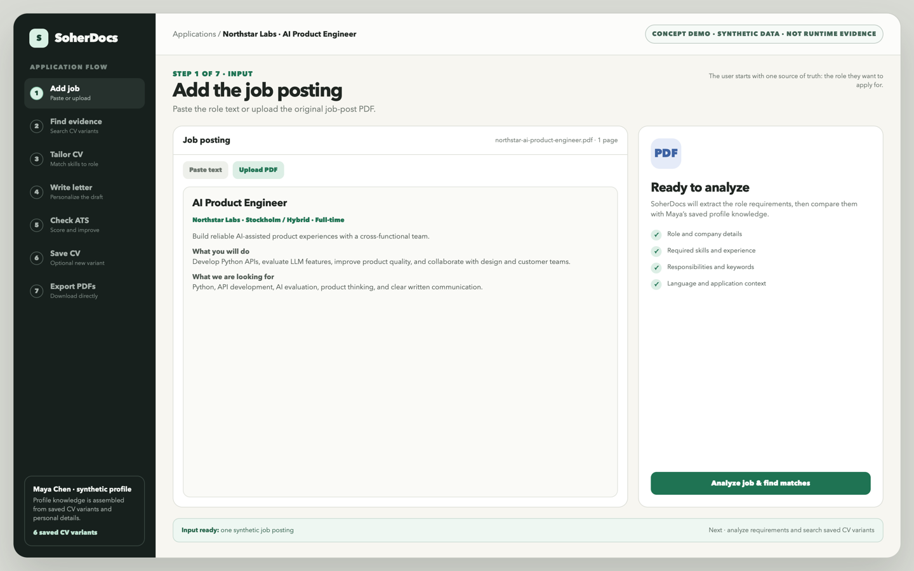

SoherAgent
A governed Pi workflow shown from a proposed /plan on concept through current /yolo on exact-batch delivery, reviewed remediation, and actual evidence from 30 runtime assertions and 155 passing tests.
Two private projects, presented without the pitch deck: what they do, how they behave, and the data behind the demos.
A governed Pi workflow shown from a proposed /plan on concept through current /yolo on exact-batch delivery, reviewed remediation, and actual evidence from 30 runtime assertions and 155 passing tests.

A synthetic product concept for matching a job with saved CV knowledge, creating tailored documents, checking ATS readiness, saving new variants, and exporting PDFs.
Watch the workflowImplementation source stays private. Supervised review or time-bounded read-only access can be arranged after scope confirmation.
LinkedIn